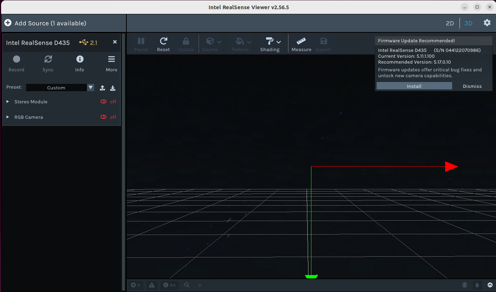

What You Will Be Creating
The objective of this demo is to run your own ROS2 Python nodes on a desktop/laptop with an Intel RealSense D435 depth camera connected over USB. You will:
- Publish RealSense color RGB frames into ROS2 from a Python node.
- Publish RealSense infrared (IR) frames from the left IR sensor as a “stereo-ish” stream into ROS2.
- Subscribe to both topics from a second node.
- Stream the live RGB and IR feeds over HTTP as MJPEG streams with a browser toggle between modes.
The RGB stream is a standard color webcam-like feed. The IR “stereo” stream is the raw mono8 infrared image from the D435’s left IR sensor, which is what the camera uses internally for depth estimation (it is not a depth map).
- An Intel RealSense D435 plugged into your computer with the USB cable (must be a USB 3.0 port - this is the USB port directly next to the power).
- A working ROS2 desktop install (ros2 and colcon) on Linux.
- Python 3 available in your ROS2 environment.
Follow Intel's documentation to install librealsense (RealSense SDK) via the following commands:
sudo apt-get update
sudo apt-get install apt-transport-https curl gnupg2 software-properties-common -y
sudo mkdir -p /etc/apt/keyrings
curl -fsSL https://librealsense.intel.com/Debian/librealsense.pgp \
| sudo tee /etc/apt/keyrings/librealsense.gpg > /dev/null
echo "deb [signed-by=/etc/apt/keyrings/librealsense.gpg] https://librealsense.intel.com/Debian/apt-repo focal main" \
| sudo tee /etc/apt/sources.list.d/librealsense.list
sudo apt-get update
cd /tmp
wget http://archive.ubuntu.com/ubuntu/pool/main/o/openssl/libssl1.1_1.1.1f-1ubuntu2.24_amd64.deb
sudo dpkg -i libssl1.1_1.1.1f-1ubuntu2.24_amd64.deb
sudo apt-get install librealsense2-utils librealsense2-dev librealsense2-dbg
sudo apt-get install ros-humble-cv-bridge
pip install opencv-python "numpy<2.0"
Before using ROS2, make sure the camera works over USB with the RealSense viewer:
realsense-viewer
Once launched, you should see the following:

If you see the D435 stream in realsense-viewer, the USB connection and SDK are working. Close the viewer before running the ROS2 publisher node.
Once the viewer is open, you should see the camera details pop up in the left side of the viewer with the text "Add Source (1 available). Expand the "Stereo Module" and "RGB Camera" carrots to play more with the display and post-processing features.

- SECTION A: Environment Setup
- SECTION B: Running the RealSense Pub/Sub + HTTP Demo
- SECTION C: Networking across multiple machines
- Explanations
source /opt/ros/humble/setup.bash
index.html:
cd /path/to/ros2_depth_camera_tutorial
The streams will be published in two topics. The first is /realsense/color/image_raw -> rgb.mjpg which is the unprocessed, full-color BGR frame directly from the D435’s RGB sensor. It is 640×480, 30 FPS, and does not have depth, IR or filtering. This is just the camera’s raw color output published as JPEG frames and should look like a normal webcam-style image.
The second topic is /realsense/stereo/image_raw -> stereo.mjpg which is the infraref stream from the realsense. This comes in the form of monochrome (mono8) direct IR sensor photon values. Simlarly to the rgb stream, this does not have depth, alignment, or filters. For display purposes only, we convert this to 3-channel. The IR feed we pass is what is used for depth estimation before any processing occurs. In later steps of this tutorial, we will appply math to the imagery data to get the depth information and perform other vision operations.
In/path/to/ros2_depth_camera_tutorial, create a file called
publisher.py with the following content:
"""
ROS2 node that:
- Opens an Intel RealSense D435 camera using pyrealsense2 over USB
- Publishes:
- color frames as sensor_msgs/msg/Image on /realsense/color/image_raw
- infrared (stereo-ish) frames on /realsense/stereo/image_raw
"""
import rclpy
from rclpy.node import Node
from sensor_msgs.msg import Image
from cv_bridge import CvBridge
import pyrealsense2 as rs
import numpy as np
class RealSensePublisher(Node):
def __init__(self):
super().__init__('realsense_camera_publisher')
# Parameters (can be overridden via ROS2 params)
self.color_topic = self.declare_parameter(
'color_topic', '/realsense/color/image_raw'
).get_parameter_value().string_value
self.stereo_topic = self.declare_parameter(
'stereo_topic', '/realsense/stereo/image_raw'
).get_parameter_value().string_value
self.get_logger().info(
f"Publishing RealSense color frames on: {self.color_topic}"
)
self.get_logger().info(
f"Publishing RealSense stereo frames on: {self.stereo_topic}"
)
# Publishers
self.color_pub = self.create_publisher(Image, self.color_topic, 10)
self.stereo_pub = self.create_publisher(Image, self.stereo_topic, 10)
self.bridge = CvBridge()
# Setup RealSense pipeline
self.pipeline = rs.pipeline()
config = rs.config()
# Enable color stream (RGB)
config.enable_stream(rs.stream.color, 640, 480, rs.format.bgr8, 30)
# Enable infrared stream (acts as a "stereo" view)
# For D435: infrared 1 = left, 2 = right. We’ll use 1 here.
config.enable_stream(rs.stream.infrared, 1, 640, 480, rs.format.y8, 30)
self.get_logger().info("Starting RealSense pipeline...")
self.pipeline.start(config)
self.get_logger().info("RealSense pipeline started.")
# Timer for publishing frames
self.timer = self.create_timer(1.0 / 30.0, self.timer_callback)
def timer_callback(self):
# Non-blocking poll to avoid blocking the executor
frames = self.pipeline.poll_for_frames()
if not frames:
return
color_frame = frames.get_color_frame()
ir_frame = frames.get_infrared_frame(1) # infrared camera 1 (left IR)
if not color_frame or not ir_frame:
return
# Convert RealSense frames to numpy arrays
color_image = np.asanyarray(color_frame.get_data()) # BGR
infrared_image = np.asanyarray(ir_frame.get_data()) # mono8
# Get a timestamp for both messages
stamp = self.get_clock().now().to_msg()
# Publish color
color_msg = self.bridge.cv2_to_imgmsg(color_image, encoding='bgr8')
color_msg.header.stamp = stamp
color_msg.header.frame_id = 'realsense_color_optical_frame'
self.color_pub.publish(color_msg)
# Publish infrared as stereo (mono8)
stereo_msg = self.bridge.cv2_to_imgmsg(infrared_image, encoding='mono8')
stereo_msg.header.stamp = stamp
stereo_msg.header.frame_id = 'realsense_infra1_optical_frame'
self.stereo_pub.publish(stereo_msg)
def destroy_node(self):
# Stop the RealSense pipeline cleanly
try:
self.get_logger().info("Stopping RealSense pipeline...")
self.pipeline.stop()
except Exception as e:
self.get_logger().warn(f"Error stopping pipeline: {e}")
super().destroy_node()
def main(args=None):
rclpy.init(args=args)
node = RealSensePublisher()
try:
rclpy.spin(node)
except KeyboardInterrupt:
node.get_logger().info("Shutting down RealSense publisher...")
finally:
node.destroy_node()
rclpy.shutdown()
if __name__ == '__main__':
main()
The RGB stream (/realsense/color/image_raw) is a standard 640×480, 30 FPS, BGR8 color image.
The stereo stream (/realsense/stereo/image_raw) is a raw mono8 infrared image from the left IR sensor.
It is what the D435 uses internally for depth calculation, not a depth map itself.
subscriber.py with the following content.
This node subscribes to both the RGB and IR topics and exposes them as MJPEG streams
over HTTP, plus a simple HTML page with an RGB / Stereo toggle.
"""
ROS2 node that:
- Subscribes to:
/realsense/color/image_raw
/realsense/stereo/image_raw
- Streams both as MJPEG over HTTP:
/rgb.mjpg
/stereo.mjpg
- Serves an HTML page at http://<this-machine-ip>:8000/
with a toggle to switch between RGB and Stereo.
"""
import threading
import time
import sys
from typing import Optional
import rclpy
from rclpy.node import Node
from sensor_msgs.msg import Image
from cv_bridge import CvBridge
from http.server import BaseHTTPRequestHandler, HTTPServer
from urllib.parse import urlparse
import cv2
# Global frame storage
_latest_rgb_jpeg_lock = threading.Lock()
_latest_rgb_jpeg: Optional[bytes] = None
_latest_stereo_jpeg_lock = threading.Lock()
_latest_stereo_jpeg: Optional[bytes] = None
class RealSenseHttpSubscriber(Node):
def __init__(self):
super().__init__('realsense_http_subscriber')
# Fixed topics to match the publisher
self.color_topic = "/realsense/color/image_raw"
self.stereo_topic = "/realsense/stereo/image_raw"
self.get_logger().info(f"Subscribing to RGB: {self.color_topic}")
self.get_logger().info(f"Subscribing to Stereo: {self.stereo_topic}")
self.bridge = CvBridge()
# Subscribers
self.rgb_sub = self.create_subscription(
Image, self.color_topic, self.rgb_callback, 10
)
self.stereo_sub = self.create_subscription(
Image, self.stereo_topic, self.stereo_callback, 10
)
# HTTP server
self.get_logger().info("Starting HTTP server on port 8000...")
self.http_server = start_http_server(port=8000)
self.get_logger().info("HTTP server started.")
# ---------------------------------------------------------
# Callbacks
# ---------------------------------------------------------
def rgb_callback(self, msg: Image):
global _latest_rgb_jpeg
try:
frame = self.bridge.imgmsg_to_cv2(msg, desired_encoding='bgr8')
except Exception as e:
self.get_logger().warning(f"[RGB] Conversion error: {e}")
return
ok, jpeg = cv2.imencode('.jpg', frame)
if not ok:
self.get_logger().warning("[RGB] JPEG encoding failed")
return
with _latest_rgb_jpeg_lock:
_latest_rgb_jpeg = jpeg.tobytes()
def stereo_callback(self, msg: Image):
global _latest_stereo_jpeg
try:
# Publisher sends mono8 (infrared)
img = self.bridge.imgmsg_to_cv2(msg, desired_encoding='mono8')
# Convert mono to 3-channel for consistent JPEG display
img = cv2.cvtColor(img, cv2.COLOR_GRAY2BGR)
except Exception as e:
self.get_logger().warning(f"[STEREO] Conversion error: {e}")
return
ok, jpeg = cv2.imencode('.jpg', img)
if not ok:
self.get_logger().warning("[STEREO] JPEG encoding failed")
return
with _latest_stereo_jpeg_lock:
_latest_stereo_jpeg = jpeg.tobytes()
def destroy_node(self):
try:
self.get_logger().info("Shutting down HTTP server...")
self.http_server.shutdown()
self.http_server.server_close()
except Exception as e:
self.get_logger().warning(f"Error shutting down HTTP server: {e}")
super().destroy_node()
# -------------------------------------------------------------
# HTTP SERVER
# -------------------------------------------------------------
class StreamRequestHandler(BaseHTTPRequestHandler):
# Avoid noisy default logging
def log_message(self, format, *args):
sys.stderr.write("[HTTP] " + format % args + "\n")
def do_GET(self):
# Strip query string (e.g. /rgb.mjpg?t=12345 -> /rgb.mjpg)
parsed = urlparse(self.path)
path = parsed.path
if path in ("/", "/index.html"):
self._serve_html()
elif path == "/rgb.mjpg":
self._stream(kind="rgb")
elif path == "/stereo.mjpg":
self._stream(kind="stereo")
else:
self.send_error(404, "Not Found")
def _serve_html(self):
# Single <img> element; JS toggles between /rgb.mjpg and /stereo.mjpg
html = b"""
RealSense Live Stream
RealSense D435 Live Stream
 Mode: RGB
"""
self.send_response(200)
self.send_header("Content-Type", "text/html")
self.send_header("Content-Length", str(len(html)))
self.end_headers()
self.wfile.write(html)
# ---- MJPEG Streaming ----
def _stream(self, kind: str):
global _latest_rgb_jpeg, _latest_stereo_jpeg
self.send_response(200)
self.send_header("Age", "0")
self.send_header("Cache-Control", "no-cache, private")
self.send_header("Pragma", "no-cache")
self.send_header("Content-Type", "multipart/x-mixed-replace; boundary=frame")
self.end_headers()
while True:
try:
if kind == "rgb":
with _latest_rgb_jpeg_lock:
frame = _latest_rgb_jpeg
else:
with _latest_stereo_jpeg_lock:
frame = _latest_stereo_jpeg
if frame is None:
time.sleep(0.05)
continue
# One MJPEG part
self.wfile.write(b"--frame\r\n")
self.wfile.write(b"Content-Type: image/jpeg\r\n")
self.wfile.write(
b"Content-Length: " + str(len(frame)).encode() + b"\r\n\r\n"
)
self.wfile.write(frame)
self.wfile.write(b"\r\n")
time.sleep(0.03)
except (BrokenPipeError, ConnectionResetError):
break
except Exception as e:
sys.stderr.write(f"[HTTP] Streaming error (%s): %s\n" % (kind, e))
break
def start_http_server(host: str = "0.0.0.0", port: int = 8000) -> HTTPServer:
server = HTTPServer((host, port), StreamRequestHandler)
def _serve():
try:
server.serve_forever()
except KeyboardInterrupt:
pass
thread = threading.Thread(target=_serve, daemon=True)
thread.start()
return server
def main(args=None):
rclpy.init(args=args)
node = RealSenseHttpSubscriber()
try:
rclpy.spin(node)
except KeyboardInterrupt:
pass
finally:
node.destroy_node()
rclpy.shutdown()
if __name__ == '__main__':
main()
Mode: RGB
"""
self.send_response(200)
self.send_header("Content-Type", "text/html")
self.send_header("Content-Length", str(len(html)))
self.end_headers()
self.wfile.write(html)
# ---- MJPEG Streaming ----
def _stream(self, kind: str):
global _latest_rgb_jpeg, _latest_stereo_jpeg
self.send_response(200)
self.send_header("Age", "0")
self.send_header("Cache-Control", "no-cache, private")
self.send_header("Pragma", "no-cache")
self.send_header("Content-Type", "multipart/x-mixed-replace; boundary=frame")
self.end_headers()
while True:
try:
if kind == "rgb":
with _latest_rgb_jpeg_lock:
frame = _latest_rgb_jpeg
else:
with _latest_stereo_jpeg_lock:
frame = _latest_stereo_jpeg
if frame is None:
time.sleep(0.05)
continue
# One MJPEG part
self.wfile.write(b"--frame\r\n")
self.wfile.write(b"Content-Type: image/jpeg\r\n")
self.wfile.write(
b"Content-Length: " + str(len(frame)).encode() + b"\r\n\r\n"
)
self.wfile.write(frame)
self.wfile.write(b"\r\n")
time.sleep(0.03)
except (BrokenPipeError, ConnectionResetError):
break
except Exception as e:
sys.stderr.write(f"[HTTP] Streaming error (%s): %s\n" % (kind, e))
break
def start_http_server(host: str = "0.0.0.0", port: int = 8000) -> HTTPServer:
server = HTTPServer((host, port), StreamRequestHandler)
def _serve():
try:
server.serve_forever()
except KeyboardInterrupt:
pass
thread = threading.Thread(target=_serve, daemon=True)
thread.start()
return server
def main(args=None):
rclpy.init(args=args)
node = RealSenseHttpSubscriber()
try:
rclpy.spin(node)
except KeyboardInterrupt:
pass
finally:
node.destroy_node()
rclpy.shutdown()
if __name__ == '__main__':
main()
The HTTP node acts like a tiny MJPEG server embedded inside your ROS2 node. It always keeps only one active MJPEG connection from the GUI (RGB or Stereo) at a time, which avoids issues with multiple simultaneous MJPEG consumers.
cd /path/to/ros2_depth_camera_tutorial
source /opt/ros/humble/setup.bash
python3 publisher.py
cd /path/to/ros2_depth_camera_tutorial
source /opt/ros/humble/setup.bash
python3 subscriber.py
source /opt/ros/humble/setup.bash
ros2 topic list | grep realsense
/realsense/color/image_raw
/realsense/stereo/image_raw
ros2 topic echo /realsense/color/image_raw --once
ros2 topic echo /realsense/stereo/image_raw --once
encoding: "bgr8". The stereo topic should show encoding: "mono8".
http://localhost:8000/
localhost with your machine's IP.
To network across multiple machines, first ensure both computers are on neet01 or the same Wi-Fi network.
Next, set the environment variables so that both publisher and subscribers share the same ROS2 domain ID. On the publisher computer connected to the depth camera:
export ROS_DOMAIN_ID=0
export ROS_LOCALHOST_ONLY=0
sudo ufw disable
On the subscriber machine, set the following environment variables:
export ROS_DOMAIN_ID=0
export ROS_LOCALHOST_ONLY=0
sudo ufw disable
Test that the subscriber computer can see the topics via:
ros2 topic list
You should see both:
/realsense/color/image_raw
/realsense/stereo/image_raw
Get the IP address of the host machine via:
hostname -I
Now try accessing the server on the other computer by putting the IP address you just found into the browser URL, like so:
http://host_IP_address:8000/
You can also hit the raw MJPEG endpoints directly from other machines if needed:
http://host_IP_address:8000/rgb.mjpg
http://host_IP_address:8000/stereo.mjpg
Let's start by trying to leverage the realsense depth module directly. In line 50 of publisher.py, enable the depth stream like so:
config.enable_stream(rs.stream.depth, 640, 480, rs.format.z16, 30)
Next, in the timer_callback function on line 69, add in a few lines to grab the depth image from the frames like so:
depth_frame = frames.get_depth_frame()
if not depth_frame:
return
depth_image = np.asanyarray(depth_frame.get_data()) # uint16 distances in mm
We will want to add some normalization to help visualize the depth. Let's add a color map! Add this directly after the code you just pasted:
depth_vis = cv2.normalize(depth_image, None, 0, 255, cv2.NORM_MINMAX)
depth_vis = depth_vis.astype(np.uint8)
depth_vis_color = cv2.applyColorMap(depth_vis, cv2.COLORMAP_TURBO)
We will publish depth_vis_color as an Image topic and stream it over HTTP just as we did with the RGB data. You can use a similar pattern to this to apply other image processing techniques on the images.
Pose Estimation and Human Joint Mapping
In this section, we will practice integrating open source techniques with our data stream. We will leverage the RGB stream by subscribing to it in a separate node and running a pose estimation model. Start by installing necessary packages:
pip install mediapipe opencv-python "numpy<2.0"
Create a file called pose_subscriber.py that subscribes to /realsense/color/image_raw:
#!/usr/bin/env python3
"""
ROS2 node that:
- Subscribes to /realsense/color/image_raw
- Runs MediaPipe Pose on CPU
- Draws a skeleton on each frame and shows it via OpenCV imshow
"""
import rclpy
from rclpy.node import Node
from sensor_msgs.msg import Image
from cv_bridge import CvBridge
import cv2
import mediapipe as mp
class PoseVisualizer(Node):
def __init__(self):
super().__init__('pose_visualizer')
# Subscribe to the RGB topic from the RealSense publisher
self.subscription = self.create_subscription(
Image,
'/realsense/color/image_raw',
self.image_callback,
10
)
self.bridge = CvBridge()
# Set up MediaPipe Pose
self.mp_pose = mp.solutions.pose
self.mp_drawing = mp.solutions.drawing_utils
self.pose = self.mp_pose.Pose(
static_image_mode=False,
model_complexity=1, # 0, 1, or 2 (higher = heavier / more accurate)
enable_segmentation=False,
min_detection_confidence=0.5,
min_tracking_confidence=0.5,
)
self.get_logger().info("PoseVisualizer initialized and subscribed to /realsense/color/image_raw")
def image_callback(self, msg: Image):
# Convert ROS Image -> OpenCV BGR
frame = self.bridge.imgmsg_to_cv2(msg, desired_encoding='bgr8')
# MediaPipe expects RGB
rgb = cv2.cvtColor(frame, cv2.COLOR_BGR2RGB)
# Run pose estimation
results = self.pose.process(rgb)
# Draw pose landmarks on the original BGR frame
if results.pose_landmarks:
self.mp_drawing.draw_landmarks(
frame,
results.pose_landmarks,
self.mp_pose.POSE_CONNECTIONS
)
# Show the frame in an OpenCV window
cv2.imshow("RealSense Pose Estimation", frame)
# Small wait so the window updates; also lets user close it with 'q'
key = cv2.waitKey(1) & 0xFF
if key == ord('q'):
self.get_logger().info("Received 'q' keypress, shutting down node...")
# rclpy.shutdown() will be called from main
raise KeyboardInterrupt
def destroy_node(self):
# Clean up any resources
self.get_logger().info("Destroying PoseVisualizer node...")
self.pose.close()
cv2.destroyAllWindows()
super().destroy_node()
def main(args=None):
rclpy.init(args=args)
node = PoseVisualizer()
try:
rclpy.spin(node)
except KeyboardInterrupt:
node.get_logger().info("PoseVisualizer interrupted by user.")
finally:
node.destroy_node()
rclpy.shutdown()
if __name__ == "__main__":
main()
This will subscribe to the image_raw topic, run pose estimation on each frame, draw the skeleton, and show it via openCV imshow!
Now, open 3 terminals. Source your ros env in each terminal and run python3 publisher.py, python3 subscriber.py, and python3 pose_subscriber.py in each terminal. Navigate to http://localhost:8000 and you will see the new toggle and stream for depth! You should also seen an openCV window pop up with labelling of face, skeleton, hands, etc! In the future, we can compute metrics from the pose such as elbow angle or extend this to work for other objects, detecting obstacles, etc.
There are 3 main layers in this setup – the host OS, the ROS2 layer, and the Python scripts:
-
Host OS + RealSense SDK
Your desktop OS (Ubuntu) runs the Intel RealSense SDK and provides the USB drivers. Thepyrealsense2library talks directly to the D435 over the USB connection, enabling both the RGB and IR streams. -
ROS2 middleware
ROS2 provides the message-passing backbone. Our publisher node publishes:/realsense/color/image_raw— 640×480, 30 FPS,bgr8color images from the RGB sensor./realsense/stereo/image_raw— 640×480, 30 FPS,mono8infrared images from the left IR sensor.
-
Application nodes (Python)
publisher.pyusespyrealsense2+cv_bridgeto convert camera frames into ROS2 Image messages.subscriber.pysubscribes to those messages, converts them back to OpenCV images, JPEG-encodes them, and serves them via a tiny HTTP server as MJPEG streams.
Conceptually:
- The RGB stream represents what you expect from a regular webcam: color frames suitable for visualization, logging, or feeding into vision models.
-
The Stereo / IR stream is the raw infrared intensity captured by one of the D435’s IR sensors. It is what the camera uses internally for stereo depth estimation. It is:
- Monochrome (
mono8), then converted to 3-channel for display. - Not depth or disparity — just raw IR brightness per pixel.
- Extremely useful if you want to reason about lighting, IR patterns, or debug depth issues.
- Monochrome (
-
The HTTP MJPEG node is effectively a bridge from ROS2 to the browser:
it maintains the latest JPEG-encoded frames in memory and streams them out as a
multipart MJPEG response. The HTML page opens a single MJPEG connection at a time
(either RGB or Stereo) and swaps modes by changing the
srcof the image.
You can extend this pattern to publish depth images, point clouds, or other RealSense streams, and expose them via different web front-ends (WebSockets, REST, etc.) while still keeping ROS2 as the messaging backbone.